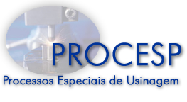

LMP>Linhas de Pesquisa>PROCESP

|
DESCRIÇÃOAs limitações impostas pelos novos materiais aos processos convencionais de manufatura levou à criação e desenvolvimento dos chamados Processos Especiais (ou não-convencionais) de fabricação. Nos últimos anos, a investigação nessa área tem se intensificado, sempre na busca de novas tecnologias. Com esse intuito, foi criado, no Laboratório de Mecânica de Precisão, o Grupo de Processos Especiais de Fabricação, ou PROCESP. A principal função do PROCESP, dentro do contexto do LMP, é promover a pesquisa em diversas áreas, de modo a melhorar o andamento das atividades da indústria e de órgãos de pesquisa, fornecendo dados confiáveis coletados ao longo de vários anos de trabalho científico. Atualmente, são desenvolvidos trabalhos dentro de duas linhas de pesquisa, nas áreas de Erosão Eletroquímica e Eletroerosão por Faísca. No mesmo espírito do LMP, o PROCESP está sempre aberto a receber e novas idéias e trabalhos, que tornem comuns os interesses da indústria e do nosso centro de pesquisa. O nosso maior objetivo é elevar o nível de conhecimento do grupo e das instituições envolvidas. ÁREAS EM DESENVOLVIMENTO |